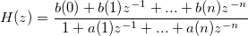

ocmsp_iir_filter
Description
Design digital or analog IIR filters with given specifications. It returns the coefficients of transfer function:

Syntax
int ocmsp_iir_filter( UINT N, double Wn, double * pB, double * pA, int type, double Rp = 0.0, double Rs = 0.0, double Wn2 = -1.0 )
Parameters
- N
- [input] filter order, should be even if type is bandpass or bandstop
- Wn
- [input] cutoff or passband/stopband edge frequency, it's in radians/second if is analog type, and should be normalized to [0, 1] if is digital type(where 1 corresponds to half the sample rate)
- pB
- [output] returned filter numerator coefficients, size N+1
- pA
- [output] returned filter denominator coefficients, size N+1
- type
- [intput] filter type, it specifies the filter prototype(Butterworth, Chebyshev Type I, Chebyshev Type II, Elliptic or Bessel), bandtype(lowpass, highpass, bandstop or bandpass) and digital or analog type. For example
- OMSP_BUTTERWORTH|OMSP_LOWPASS|OMSP_DIGITAL means a lowpass Butterworth digital filter.
- Rp
- [input][optional] passband ripple (dB), needed when it's Chebyshev Type I or Elliptic type
- Rs
- [input][optional] stopband attenuation (dB), needed when it's Chebyshev Type II or Elliptic type
- Wn2
- [input][optional] cutoff or passband/stopband-edge frequency. Needed when it's a bandpass or bandstop filter. It's in radians/second if is analog, and should be normalized to [0, 1] if is digital type (where 1 corresponds to half the sample rate).
Return
Return OE_NOERROR if succeed, otherwise, non-zero error code is returned (OE_NULL_POINTER, OE_INVALID_FREQ, OE_INVALID_BANDFREQS, OE_INVLAID_RIPPLE, OE_INVALID_BANDRIPPLES or OE_INVALID_TYPE)
Examples
EX1
#include <ocmsp.h>
void ocmsp_iir_filter_ex1()
{
UINT N = 18; //even number if is bandpass or bandstop
double Wn[2] = {300.0/500, 400.0/500};
vector A(N+1), B(N+1); //size is N+1
int type = OMSP_BUTTERWORTH|OMSP_BANDPASS|OMSP_DIGITAL;
int nRet = 0;
if (0 != (nRet = ocmsp_iir_filter(N, Wn[0], B, A, type, 0.0, 0.0, Wn[1])))
{
printf("ocmsp_iir_filter failed, error code=%d\n", nRet);
return;
}
int ii;
printf("b= ");
for(ii = 0; ii < B.GetSize(); ++ii)
{
printf("\t%lf\n", B[ii]);
}
printf("a= ");
for(ii = 0; ii < A.GetSize(); ++ii)
{
printf("\t%lf\n", A[ii]);
}
}
Remark
See Also
ocmsp_iir_filter_sos, ocmsp_iir_filter_ss, ocmsp_iir_filter_zp
header to Included
ocmsp.h
Reference